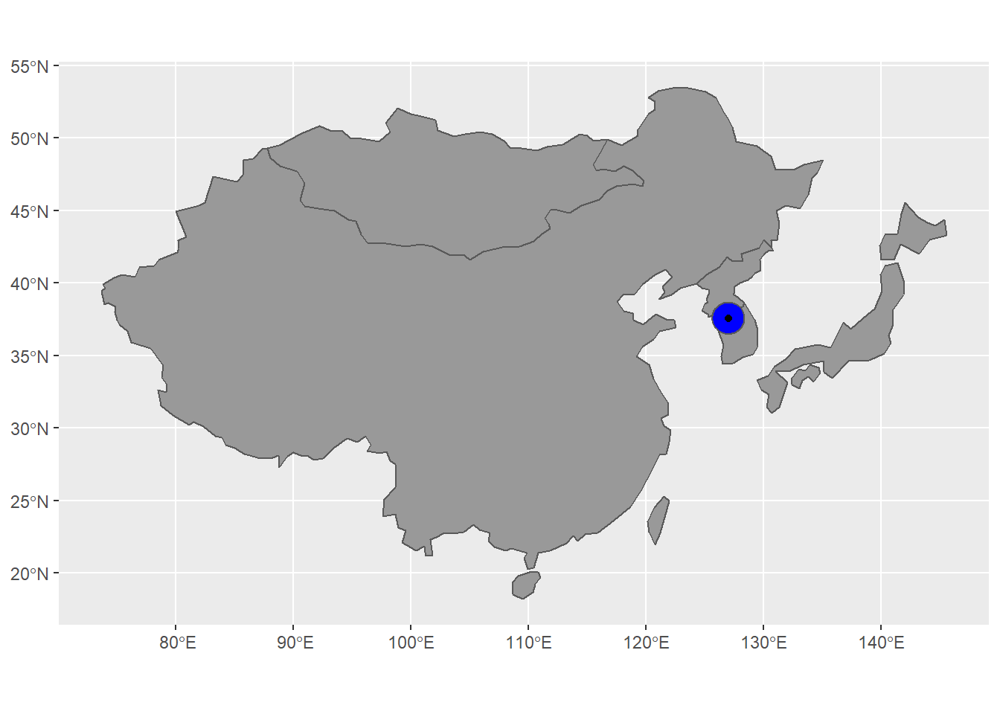

Disasters, such as storms, wildfires, and crowd stampede, occur and threaten human’s physical and mental health. It is important to estimate social resilience because it represents population mental health. Therefore, understanding how people react and how their emotion changes toward disasters would be a crucial factor when analyzing social resilience. Twitter API allow users to access tweets within a week. Therefore, in this project, we collected tweets from different time frames, including before, during, and after disaster happened. To evaluate social resilience, Twitter data is used to produce social resilience index and analyze population emotion changes in a lexicon based sentiment analysis, which means that the categorizing is based on sentiment dictionaries. The trend of sentiment emotion score changes is the symbol of social resilience. This project focused on analyzing people’s emotional changes toward a crowd stampede incident in Itaewon, Seoul, South Korea on October 29, 2022.
Here are the libraries used in this project.
library(twitteR)
library(rtweet)
library(dplyr)
library(tidytext)
library(textdata)
library(janeaustenr)
library(dplyr)
library(stringr)
library(tidyr)
library(ggplot2)
library(reshape2)
library(spData)
library(sf)
library(tidyverse)
library(maps)
library(wordcloud)
library(RColorBrewer)
library(wordcloud2)
library(tm)
knitr::opts_chunk$set(cache=TRUE)Twitter data is already saved in “data” file, however, here is the example code demonstrate data downloading. To analyze sentiment changes, we collected tweets from three timeframes: before, during, and after disaster happened. We used the keyword “korea” to collect the tweets mention Korea. Also, since get_sentiment() cannot be used in non-interactively platform, therefore, sentiment dictionaries were downloaded and saved as .csv file.
consumer_key <- "XXX"
consumer_secret <-"XXX"
access_token <- "XXX"
access_secret <- "XXX"
setup_twitter_oauth(consumer_key, consumer_secret, access_token, access_secret)
# data accessing
loc = "35.7745, 123.3780, 200mi"
L0 <- searchTwitter("korea", n = 1000, lang = "en", geocode = loc,
since = "2022-10-24", until = "2022-10-29")
L1 <- searchTwitter("korea", n = 1000, lang = "en", geocode = loc,
since = "2022-10-29", until = "2022-10-31")
L2 <- searchTwitter("korea", n = 1000, lang = "en", geocode = loc,
since = "2022-11-01", until = "2022-11-03")
L3 <- searchTwitter("korea", n = 1000, lang = "en",
since = "2022-11-03", until = "2022-11-06")
L4 <- searchTwitter("korea", n = 1000, lang = "en",
since = "2022-11-06", until = "2022-11-09")
L5 <- searchTwitter("korea", n = 1000, lang = "en",
since = "2022-11-09", until = "2022-11-12")
L6 <- searchTwitter("korea", n = 1000, lang = "en",
since = "2022-11-12", until = "2022-11-15")
...
D0 <- twListToDF(L0)%>%
mutate(timeline = "before")
D1 <- twListToDF(L1) %>%
mutate(timeline = "during")
D2 <- twListToDF(L2) %>%
mutate(timeline = "after")
D3 <- twListToDF(L3) %>%
mutate(timeline = "after2")
D4 <- twListToDF(L4) %>%
mutate(timeline = "after3")
D5 <- twListToDF(L5) %>%
mutate(timeline = "after4")
D6 <- twListToDF(L6) %>%
mutate(timeline = "after5")
...
data <- rbind(D0, D1, D2)
save_as_csv(data, "XXX.csv")
afinn = get_sentiments("afinn")
nrc = get_sentiments("nrc")
save_as_csv(afinn, "data/affin.csv")
save_as_csv(nrc, "data/nrc.csv")A csv file (Twitter data) and Seoul location is read. Tweets locate nearby Seoul within 120 km are remained. Also, emojis and links are removed from the text.
data <- read.csv("data/Twitter_disaster_1025_1115.csv")
point <- st_as_sf(data, coords = c("longitude", "latitude"), crs = 4326)
data(world.cities)
seoul <- world.cities %>%
filter(name == 'Seoul')%>%
st_as_sf(coords = c("long", "lat"), crs = 4326)
seoul_buffer <- seoul %>%
st_buffer(dist = 120000)
data <- st_intersection(point, seoul_buffer)
data$text = gsub(" ?(f|ht)tp(s?)://(.*)[.][a-z]+", "", data$text)
data$text = gsub("[^\x01-\x7F]", "", data$text)Finally, we introduced sentiment dictionaries.
afinn = read.csv("data/afinn.csv")
nrc = read.csv("data/nrc.csv")The data we use in this project was collected within this area.
data(world)
asia <- world %>%
filter(subregion == "Eastern Asia") %>%
st_transform(crs = 4326)
ggplot()+
geom_sf(data = asia, fill = "grey60")+
geom_sf(data = seoul_buffer, fill = 'blue')+
geom_sf(data = seoul, fill = "red")
To understand topic, keywords, and sentiment changes in tweets, tweets are sliced into words, and the frequency of each word using is calculated. Numbers, special characters, and spaces are removed from the analysis. Also, because all the tweets mention “korea”, we removed the word “korea” from analysis.
steps <- c("before", "during", "after", "after2", "after3", "after4", "after5")
for (i in steps){
data_temp <- data %>%
filter(timeline == i)
text_data <- data_temp$text
docs_data <- Corpus(VectorSource(text_data))
docs_data<- docs_data %>%
tm_map(removeNumbers) %>%
tm_map(removePunctuation) %>%
tm_map(stripWhitespace)
docs_data <- tm_map(docs_data, content_transformer(tolower))
docs_data <- tm_map(docs_data, removeWords, stopwords("english"))
dtm <- TermDocumentMatrix(docs_data)
matrix <- as.matrix(dtm)
words <- sort(rowSums(matrix),decreasing=TRUE)
df_data <- data.frame(word = names(words),freq=words)
assign(paste0("df", i), df_data)
}Word clouds can help us understand the topic trend in each time frame. Also, they can ensure our results reflect the emotion changes are related to the stampede incident on Oct. 29th. Before stampede, keywords mostly used are more positive and more related to the KPOP trend.
dfbefore <- dfbefore %>%
filter(word != "korea")
wordcloud(words = dfbefore$word,
freq = dfbefore$freq, min.freq = 1,
max.words=200, random.order=FALSE, rot.per=0.35,
colors=brewer.pal(8, "Dark2"))Word cloud before stampede
During Oct. 29th and Nov. 1st, it is obvious that people mentioned “south” more often, which might represent south korea. This figure indicates that people mentioned itaewon, tragedy, and other words related to the stampede incident.
dfduring <- dfduring %>%
filter(word != "korea")
wordcloud(words = dfduring$word,
freq = dfduring$freq, min.freq = 1,
max.words=200, random.order=FALSE, rot.per=0.35,
colors=brewer.pal(8, "Dark2"))Word cloud during stampede
After disaster, people mentioned north, missile, and ballistic more often, which means people started to change their focus on the stampede incident.
dfafter <- dfafter %>%
filter(word != "korea")
wordcloud(words = dfafter$word,
freq = dfafter$freq, min.freq = 1,
max.words=200, random.order=FALSE, rot.per=0.35,
colors=brewer.pal(8, "Dark2"))Word cloud after stampede
Before the disaster, the words people used shows more characters with positive emotions, such as joy.
dfbefore %>%
inner_join(nrc) %>%
group_by(sentiment) %>%
arrange(desc(freq)) %>%
slice(1:10) %>%
ungroup() %>%
mutate(word = reorder(word, freq)) %>%
ggplot(aes(freq, word, fill = sentiment)) +
geom_col(show.legend = FALSE) +
facet_wrap(~sentiment, scales = "free_y") +
labs(x = "Contribution to sentiment(before disaster)",
y = NULL)+
xlim(0, 202)Emotion before stampede
Right after disaster happened, the words people used shows more characters with negative emotions, such as fear, sadness, and disgust.
dfduring %>%
inner_join(nrc) %>%
group_by(sentiment) %>%
arrange(desc(freq)) %>%
slice(1:10) %>%
ungroup() %>%
mutate(word = reorder(word, freq)) %>%
ggplot(aes(freq, word, fill = sentiment)) +
geom_col(show.legend = FALSE) +
facet_wrap(~sentiment, scales = "free_y") +
labs(x = "Contribution to sentiment(during disaster)",
y = NULL)+
xlim(0, 100)Emotion during stampede
After disaster, the words people used shows more characters with positive emotion, however, the fear emotion is strong.
dfafter %>%
inner_join(nrc) %>%
group_by(sentiment) %>%
arrange(desc(freq)) %>%
slice(1:10) %>%
ungroup() %>%
mutate(word = reorder(word, freq)) %>%
ggplot(aes(freq, word, fill = sentiment)) +
geom_col(show.legend = FALSE) +
facet_wrap(~sentiment, scales = "free_y") +
labs(x = "Contribution to sentiment(after disaster)",
y = NULL)+
xlim(0,100)Emotion after stampede
During the disaster, the emotion score dropped significantly. 6 days after the disaster, emotion score bounced back to the level of before disaster.
dfbefore <- dfbefore %>%
inner_join(afinn) %>%
mutate(score = freq*value)
dfduring <- dfduring %>%
inner_join(afinn) %>%
mutate(score = freq*value)
dfafter <- dfafter %>%
inner_join(afinn) %>%
mutate(score = freq*value)
dfafter2 <- dfafter2 %>%
inner_join(afinn) %>%
mutate(score = freq*value)
dfafter3 <- dfafter3 %>%
inner_join(afinn) %>%
mutate(score = freq*value)
dfafter4 <- dfafter4 %>%
inner_join(afinn) %>%
mutate(score = freq*value)
dfafter5 <- inner_join(dfafter5, afinn, by = "word")%>%
mutate(score = freq*value)
SCORE <- c(sum(dfbefore$score), sum(dfduring$score), sum(dfafter$score),sum(dfafter2$score),sum(dfafter3$score),
sum(dfafter4$score), sum(dfafter5$score))
timeframe <- c("-1", "0", "1", "2", "3", "4", "5")
names <- c("before", "during", "3D-after", "6D-after", "9D-after", "12D-after", "15D-after")
trend <- data.frame(names, timeframe, SCORE)
ggplot(trend, aes(x= factor(names,level = c("before", "during", "3D-after", "6D-after", "9D-after", "12D-after", "15D-after")), SCORE, group = 1))+
geom_line(arrow = arrow())+
geom_point()+
xlab("timeline")+
ylab("emotion score")+
ggtitle("social resilience")+
theme(plot.title = element_text(hjust = 0.5))Social resilience
This project illustrates the social resilience after stampede disaster on Oct. 29th. The topic trends on Twitter changed rapidly, meaning that people’s focus changed much faster than we expected. In addition, by combining sentiment dictionaries with Twitter data, we can observe the public emotion. Before stampede, public emotion was strongly positive, words with joy emotion were frequently used. In the first three days after disaster, people focused on the stampede incident, and words with negative emotions, such as fear, sadness, and disgust are more widely used. After disaster, the positive words are more frequently used than during disaster. Emotion score shows public emotion changes and social resilience. Before stampede, the emotion score was nearly +1000. Between Oct. 29th to Nov. 1st, the emotion score dropped significantly, with the score of -1250. After disaster, the emotion score slowly increased and showed a steady positive trend 6 days after disaster. The results show the social emotion score bounce back after 6 days after stampede although the disaster traumatize the society.